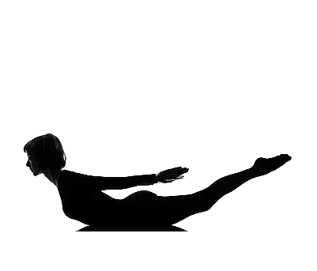

Instructions |
Benefits |
|
|---|---|---|
| > Begin lying on your stomach with your arms at your sides > Rest your forehead on the mat > Inhale and raise your head to look forward > Use your inner thighs to lift your legs up toward the ceiling > Keep your chest lifted as you widen across your collarbones > Gaze at your cheeks > Hold for up to one minute |
 |
> It helps to reduce the abdominal fat and tone the abdomen > It helps to strengthen your back muscles > It helps in repairing your entire spinal cord and replenishes > It strengthens your neck muscles > repairs defects in the neck joints > It encourages digestion > It helps in rectifying the urinary disorders > It strengthens the reproductive system > It helps in strengthening the uterus > It helps in correcting the menstrual problems and guarantees a normal cycle > It strengthens the hip bones and reduces any excessive thigh muscles > It helps to decrease constipation |